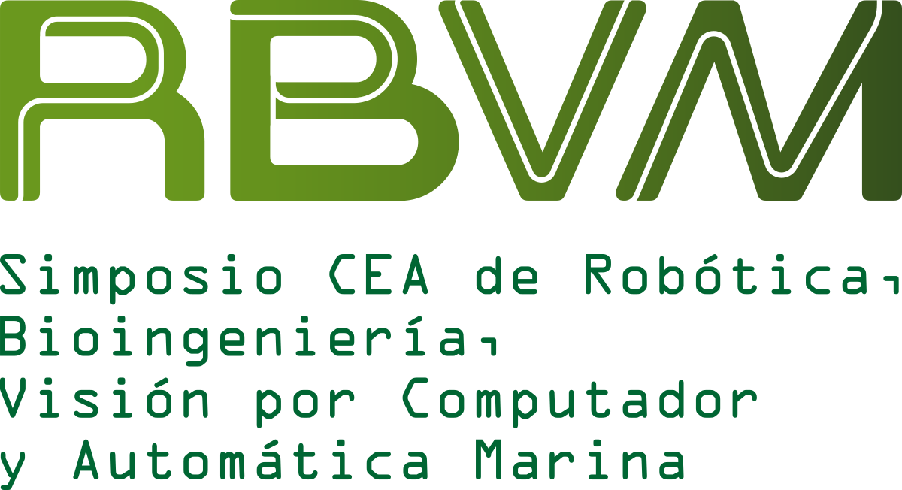
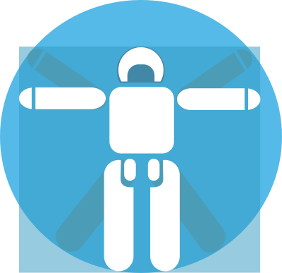

Cover
International Symposium / Conference Name · City · Date


Your Technical Paper Title Goes Here
Author One · Author Two · Author Three · Author Four
Department / Laboratory · University or Research Institution
Project name · Research group · Funding or event note
Template overview
What this template includes
- Manual cover and closing slides
- Normal slides with color variants
- Big centered title slides
- Split 30/70 slides
- Animated SVG background slides
- Inline color, highlight and underline utilities
Use this file as a visual catalogue of the available slide styles.
Slide grammar
Use only ## for real slides
## Title → normal slide## Title {.rl-bg-light} → light slide## Title {.rl-big-title .rl-bg-navy .rl-word-aqua} → big centered title## Title {.rl-split-30-70 .rl-dark} → split slide## Title {.theme-title1} → animated SVG title slide## Cover {.rl-cover ...} → cover or closing slide
COVER VARIANTS
Optional cover styles
Cover, light variant
Light cover variant · Optional when the background is bright
A Cleaner Cover for Bright Backgrounds
Presenter name · Coauthors
Use .rl-cover-light when your background is pale or white
Template overview
What this template includes
- Manual cover and closing slides
- Normal slides with color variants
- Big centered title slides
- Split 30/70 slides
- Animated SVG background slides
- Inline color, highlight and underline utilities
Use this file as a visual catalogue of the available slide styles.
Slide grammar
Use only ## for real slides
## Title → normal slide## Title {.rl-bg-light} → normal light slide## Title {.rl-bg-teal} → soft aqua slide## Title {.rl-bg-navy} → dark high-contrast slide## Title {.rl-big-title .rl-bg-navy .rl-word-aqua} → big centered title## Title {.rl-split-30-70 .rl-dark} → split slide## Title {.theme-title1} → animated SVG title slide## Cover {.rl-cover ...} → cover or closing slide
Do not use # headings in this template. Use ### and #### only inside slides.
BIG TITLE SLIDES
For transitions, sections and memorable moments
METHODS
Large title using the gold accent
RESULTS
Light background with strong dark word
TAKEAWAYS
Warm accent slide for final messages
Default dark slide
Default slide style
This is the default normal slide. It uses the petrol brand color as background and light text.
- Use this for standard explanations.
- Keep the content short.
- Use highlights only when needed.
The main contribution can be highlighted, while technical terms can use color.
Light slide example
Clean academic background
Smaller subtitle
This variant is useful for dense technical content, figures, tables or diagrams.
The main idea is easy to emphasize. You can also use rose text, orange text, or underlined concepts.
Aqua slide
Soft scientific background
This is useful for biomedical, rehabilitation or soft robotics sections.
The controller achieved safe tracking without thermal saturation.
You can combine:
- highlight yellow
- highlight pink
- highlight green
- highlight purple
Pearl gray slide
Neutral, calm and readable
Use this background when a pure white slide feels too bright but a colored slide feels too strong.
A soft marker and a gold underline work well here.
Navy slide
High contrast slide
Use this for important messages or short technical summaries.
- Aqua works well on navy.
- Gold works well for key numbers.
- Rose adds contrast.
Blockquotes also adapt to the slide color system.
Gold slide
Warm accent for conclusions
Use this slide sparingly, for one key idea, conclusion or memorable statement.
The final takeaway should be short and clear.
Inline utilities
Text colors, highlights and underlines
This template includes several inline classes:
- Petrol text
- Aqua text
- Blue text
- Gold text
- Orange text
- Rose text
- Coral text
- Green text
- Violet text
You can write bold colored text, highlighted results, or underlined key ideas.
Code and equations
Example with code
model <- lm(mpg ~ disp, data = mtcars)
summary(model)
Call:
lm(formula = mpg ~ disp, data = mtcars)
Residuals:
Min 1Q Median 3Q Max
-4.8922 -2.2022 -0.9631 1.6272 7.2305
Coefficients:
Estimate Std. Error t value Pr(>|t|)
(Intercept) 29.599855 1.229720 24.070 < 2e-16 ***
disp -0.041215 0.004712 -8.747 9.38e-10 ***
---
Signif. codes: 0 '***' 0.001 '**' 0.01 '*' 0.05 '.' 0.1 ' ' 1
Residual standard error: 3.251 on 30 degrees of freedom
Multiple R-squared: 0.7183, Adjusted R-squared: 0.709
F-statistic: 76.51 on 1 and 30 DF, p-value: 9.38e-10
Inline code such as u_pid[k] uses the slide code color.
You can also write mathematical content:
\[
e[k] = r[k] - y[k]
\]
30/70 split, dark right
- Left panel: slide title
- Right panel: main content
- Useful for concept explanation
- Works well with bullets, quotes and code
This layout is good when the title should behave like a visual anchor.
The right side can contain the real technical explanation.
30/70 split, light right
- Dark petrol left panel
- Pale aqua right panel
- Good for readable technical explanations
- Suitable for short paragraphs and lists
The important concept can be highlighted inside the content area.
30/70 split, teal style
- Stronger RoboticsLab identity
- Good for system overview
- Good for architecture slides
- Good for paper contribution slides
Use this slide when you want something more distinctive than a normal slide.
30/70 split, navy style
- Light left panel
- Dark right panel
- Good for dramatic contrasts
- Useful for a key result or final concept
The gold accent works well on the dark side.
Animated title background 1
Use for section openings
Animated title background 2
Another centered title background
Animated section background 1
Text and code example
This slide uses an animated SVG background and reserves content space on the left.

Animated section background 2
Subtitle
This style is useful for section transitions or short explanations.
Quarto enables you to combine text, figures, code and custom visual layouts.
Animated section background 3
Another subtitle
This variant places the content further to the right.
Use it when the visual background has stronger elements on the left.
Generic animated slide 1
Normal slide with custom SVG background
This slide uses a full-slide animated SVG background.
Generic animated slide 2
Left-offset content
This variant shifts content to avoid visual elements in the background.
- Item one
- Item two
- Item three
Generic animated slide 3
Another left-offset content slide
Use these variants when a specific background image requires a custom content position.
Generic animated slide 4
Top-offset title
This variant moves the title down slightly.
Generic animated slide 5
Small left offset
This variant uses a smaller left offset.
Generic animated slide 6
Small left offset
Suitable for backgrounds with mild visual elements.
Generic animated slide 7
Top-offset title
Use for visual transition slides.
Generic animated slide 8
Top-offset title
Another visual slide variant.
Custom QMD background
Per-slide background image
This shows how to attach a one-off background image from the QMD heading.
Use this only when a specific presentation needs a unique visual background.
Recommended slide sequence
Suggested structure for a 5–6 minute conference talk
- Cover
- Motivation
- Problem
- Proposed idea
- System architecture
- Control strategy
- Experimental setup
- Main results
- Takeaways
- Closing
Use only a few highly visual slides. Keep most technical slides clean.
Closing
International Symposium / Conference Name · City
Your Technical Paper Title Goes Here
Presenter name · Institution · contact@email.com
Project name · Research group · Contact / repository